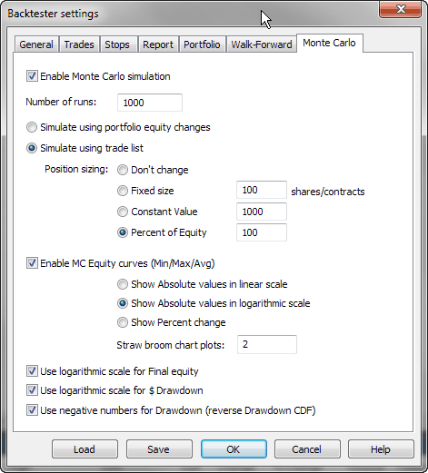
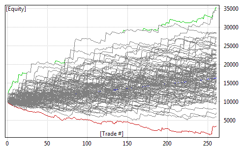
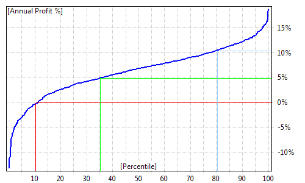

NOTE: Advanced topic. Make sure to read previous parts of the tutorial first. In order to interpret Monte Carlo simulation results properly you need to read this section of the manual. Non-trivial settings and non-obvious details are explained below. Please don't skip it.
Introduction
Generally speaking, "Monte Carlo" methods represent a broad class of computer algorithms that use repeated random sampling to obtain statistical properties of a given process. It was invented by Polish mathematician Stanislaw Ulam working on nuclear weapons projects at the Los Alamos lab. As he was unable to analyse complex physical processes using conventional mathematical methods, he thought that he could set up a series of random experiments, observe the outcomes and use them to derive statistical properties of the process.
More on Monte Carlo methods in general can be found here: https://en.wikipedia.org/wiki/Monte_Carlo_method
In trading system development, Monte Carlo simulation refers to the process of using randomized simulated trade sequences to evaluate statistical properties of a trading system.
There are many ways to perform actual computations that differ when it comes to implementation details, but probably the most straightforward and reliable is the bootstrapping method that performs random sampling with replacement of the actual trade list generated by the backtest.
See https://en.wikipedia.org/wiki/Bootstrapping_(statistics) for a detailed discussion of the bootstrapping method.
Various Monte Carlo simulation methods allow verification of the robustness of the trading system, find out the probability of ruin and many other statistical properties of the trading system.
How does it work in AmiBroker?
In order to perform a Monte Carlo simulation (or bootstrap test) of your trading system, AmiBroker performs the following:
A. Creating input set
A.1 Perform back-testing of your trading system to produce an original set of N trades
B. Repeatedly (1000+ times)
B.1 Pick trades randomly from the original trade list to produce a new, random set of N trades (called 'realization')
This random set contains the same number of trades; they are ordered randomly, and some original trades may be skipped and some used more than once (permutation with repetition, or random sampling with replacement).
Since the number of unique realizations is N^N (so with just 100 input trades we have 100100 unique realizations), with a sufficient number of trades (>100), the probability of picking an identical sequence as the original is virtually zero.
B.2 Sequentially perform gain/loss calculations for each randomly picked trade, using position sizing defined by the user to produce system equity
B.3 Record system equity in the distribution.
C. Post-process
C.1 Process data obtained in B to generate distribution statistics and charts.
All of the above happens when you press Backtest button in the New Analysis window. AmiBroker's Monte Carlo simulator is so fast that it usually costs just a fraction of a second on top of the normal backtest procedure.
It should be noted that simulated trades during bootstrap are performed sequentially. If your original trading system traded multiple positions at once (so some or all of the trades overlapped) it may result in smaller system drawdowns being reported by the bootstrap test, because drawdowns from individual trades would occur sequentially (not in parallel as with overlapping trades).
Settings
The way the Monte Carlo simulator works can be controlled from the Analysis Settings page, "Monte Carlo" tab:

Enable Monte Carlo simulation
This check box controls whether MC simulation is performed automatically as part of a backtest (right after a backtest generates the trade list)
Number of runs
Defines the number of MC simulations to run (should be 1000 or more).
Simulate using portfolio equity changes
This option causes the MC simulation to use bar-by-bar portfolio equity percent changes instead of individual trades. Those individual equity changes are randomly picked and permuted to create a simulation run. In this mode, bar-by-bar equity changes are computed as a ratio (so a 10% increase is represented as 1.1), selected randomly and multiplied cumulatively. This setting allows handling situations where you have multiple overlapping trades in your system and does not require any special setting for position sizing.
Simulate using trade list
This option causes the MC simulation to use individual trades from the original backtest to create a simulation run. To perform simulation in this mode, the MC simulator randomly picks original trades and applies new position sizing as defined below. This mode is useful in cases when you don't have overlapping trades.
Position sizing
Defines the position sizing method used by the MC simulator in "trade list" mode:
Don't change - Uses the original position size as used during backtest. Keep in mind that it always uses the original dollar value of the trade (or whatever currency you use), even if your formula is using a percent of portfolio equity.
Fixed size - Uses a fixed number of shares/contracts per trade.
Constant value - Uses a fixed dollar amount for opening any trade.
Percent of equity - Uses a defined percent of the current simulated equity value. Be careful when using this setting — it causes the position size of one trade to depend on profits from previous trades (compounding profits) and creates serial dependence. It may also lead to an extra compounding effect when you have multiple overlapping trades in your original backtest, as the bootstrap performs trades sequentially (so they don't overlap). For this reason, its use is limited to cases where no overlapping trades occur.
Enable MC equity curves (Min/Max/Avg)
Turns on MC equity charts (including highest, lowest and average equity plots
plus straw broom equity charts). Note that green and red lines (min/max equity)
are not really single "best" and "worst" equities.
They are bar-by-bar highest (max) and lowest (min) points of all equities generated
during MC.
So they are actually the best points from all equities and the worst points from all
equities. And the blue line (avg) is the average from all equity lines (all
runs).
Show absolute values in linear scale - displays equities in absolute dollar values using a linear scale chart.
Show absolute values in logarithmic scale - displays equities in absolute dollar values using a semi-log chart.
Show Percent Change - displays equities as "rate of change" since the beginning.
Straw Broom Chart Plots - defines how many individual test equities should be plotted as a 'straw broom chart' (large number may slow down processing/drawing)
Use logarithmic scale for Final Equity
Displays the final equity CDF chart using a semi-log scale instead of linear.
Use logarithmic scale for $Drawdown
Displays the dollar drawdown CDF chart using a semi-log scale instead of linear.
Use negative numbers for Drawdown (reverse Drawdown CDF)
When this option is turned on, both dollar and percent drawdowns are reported as negative numbers. This also has an effect on the CDF distribution. It reverses the ordering of the "drawdown" column in the MC table and reverses the meaning (i.e., a 10% percentile value means that there is a 10% chance of drawdowns being equal to or worse (more negative) than the presented amount. With this option turned off (as in old versions), drawdowns are reported as numbers greater than zero (positive), and a 10% percentile value means a 10% chance of drawdowns being equal to or better (smaller) than the presented amount.
Best practices
To remove the risks of serial correlation affecting the results of Monte Carlo simulation, it is highly encouraged to use fixed position sizing (either a fixed dollar value of trades or a fixed number of shares/contracts), so the order in which a given trade occurs in the original sequence does not affect its profit/loss due to compounding.
Also, depending on whether your system opens multiple overlapping positions, choose the simulation method as follows
The results of the Monte Carlo simulation are displayed on the "Monte Carlo" page of the Backtest report.
At the top of the page, we can see a table that gives values of a few key statistics derived from the cumulative distribution charts (CDFs) of Monte Carlo simulation results.
Here are sample results (highlights are added manually for the purpose of illustration). Starting equity was 10000 in this example. The test was done over 7 years (EOD data).
| Percentile | Final Equity | Annual Return | Max. Drawdown $ | Max. Drawdown % | Lowest Eq. |
|---|---|---|---|---|---|
| 1% | 5706 | -7.37% | 1302 | 7.23% | 3618 |
| 5% | 7987 | -3.02% | 1549 | 9.76% | 5853 |
| 10% | 9706 | -0.41% | 1726 | 11.32% | 6690 |
| 25% | 12851 | 3.48% | 2136 | 14.38% | 8107 |
| 50% | 16174 | 6.78% | 2747 | 19.77% | 9135 |
| 75% | 19632 | 9.64% | 3563 | 27.63% | 9640 |
| 90% | 23258 | 12.21% | 4626 | 38.48% | 9922 |
| 95% | 25269 | 13.48% | 5292 | 45.47% | 10000 |
| 99% | 29139 | 15.71% | 7685 | 63.82% | 10000 |
The first column shows the percentile level (the value below which a given percentage of test observations (realizations) fall). So, say, the 10th percentile tells us that 10% of the time the observed value is below the shown amount. For example, the annual return value at the 10th percentile (in this case, -0.41%) means that 10% of tests (realizations) had an annual profit less than or equal to the shown amount (-0.41%). So we can say that there is about a 10% chance that our system would not make any money (would not break even). A max. drawdown figure at the 90th percentile (38.48%) means that in 90% of cases, the drawdown will be less than 38.48%. So in other words, we can say that there is a 10% chance that it will be higher than that. If we look further in the table, we can also notice that in 99% of cases, the drawdown will be less than 63.82%. It is important to note that the table above is generated with "Use negative numbers for Drawdown" turned OFF.
If we turn ON the "Use negative numbers for Drawdown" option, all drawdown numbers will become negative, and the order would be reversed, and the meaning of the drawdown column would be reversed too, like in the table below:
| Percentile | Final Equity
|
Annual Return
|
Max. Drawdown $
|
Max. Drawdown %
|
Lowest Eq.
|
|---|---|---|---|---|---|
| 1% | 5706
|
-7.37%
|
-7685
|
-63.82%
|
3618
|
| 5% | 7987
|
-3.02%
|
-5292
|
-45.47%
|
5853
|
| 10% | 9706
|
-0.41%
|
-4626
|
-38.48%
|
6690
|
| 25% | 12851
|
3.48%
|
-3563
|
-27.63%
|
8107
|
| 50% | 16174
|
6.78%
|
-2747
|
-19.77%
|
9135
|
| 75% | 19632
|
9.64%
|
-2136
|
-14.38%
|
9640
|
| 90% | 23258
|
12.21%
|
-1726
|
-11.32%
|
9922
|
| 95% | 25269
|
13.48%
|
-1549
|
-9.76%
|
10000
|
| 99% | 29139
|
15.71%
|
-1302
|
-7.23%
|
10000
|
This time, the meaning of the drawdown column is reversed — it tells you that the drawdowns would be worse (more negative) than the specified amount. A 99% percentile value of -7.23% means that in 99% of cases, you will see drawdowns worse (more negative) than -7.23%. A 1% percentile value of -63.82% tells you that in 1% of cases, you would experience drawdowns equal to or worse (more negative) than -63.82%.
This way, the table can be read "row-wise," and the top of the table (small percentiles) refers to "pessimistic" scenarios.
Below the table, we can find the min/avg/max + straw broom chart of simulated equities:

Note that green and red lines (min/max equity) are not really single "best" and "worst" equities. They are bar-by-bar highest (max) and lowest (min) points of all equities generated during MC. So they are actually the best points from all equities and the worst points from all equities. And the blue line (avg) is the average from all equity lines (all runs). The 'cloud' of gray lines represents individual test equities. As we can see, the same trading system may generate different outcomes when market conditions change, and MC simulation attempts to simulate various outcomes and provide you some statistical information on how bad/good it may be.
After the straw broom chart, you can find cumulative distribution function (CDF) charts of final equity, CAR, drawdowns, and lowest equity (again, green and red annotation lines were added manually):

Cumulative distribution charts present the same information that was included in the table at the top of the "Monte Carlo" page but in graphical form. Again, when we take a look at the annual profit % (CAR) distribution chart, we can see that in approximately 10% of cases, our system would not break even (producing negative CAR). We can also see that in approximately 35% of cases, our CAR would be below 5%. Profits above 10% per year only occur in the top 20% of tests.
All other charts on the MC page are constructed in the same way and you can read them using the same methodology.
The final equity chart shows the cumulative distribution function of the final value of the equity (at the end of the test period).
The annual return chart shows the cumulative distribution function of the compound annual percentage return of the test.
Max. Drawdown $ and Max. Drawdown % charts show the cumulative distribution function of drawdowns (maximum peak-to-valley dollar/percent distances) experienced during the test.
The Lowest Equity chart shows the cumulative distribution function of the lowest equity ever experienced during the test.
How to control it from the formula level?
In addition to using the Settings dialog, you can control the Monte Carlo simulator using the SetOption() function. You can also retrieve those values using the GetOption function.
SetOption("MCEnable", 0 ); // value == 0 disables MC simulation
SetOption("MCEnable", 1 ); // value == 1 enables MC only in portfolio
backtests (default)
SetOption( "MCEnable", 2 ); // value == 2 forces MC to be enabled
everywhere (in every mode including optimization - SLOW !)
Note that enabling MC in optimization is highly discouraged unless you actually
use MC metrics as an optimization target via a custom backtester
or otherwise use MC distributions in the optimization process.
The Monte Carlo process is computationally costly, and while a few hundred milliseconds
added to one backtest don't matter much,
in the case of optimizations, when these are multiplied by the number of steps, you can
easily increase optimization time by orders of magnitude.
So, unless you REALLY need an MC distribution as a custom metric and optimization target,
do NOT enable MC in optimization.
SetOption("MCRuns", 1000 ); // define number of MC simulation runs (realizations)
Other MC parameters that can be set using SetOption and retrieved using GetOption:
How to add a custom metric based on MC test distribution(s) to the backtest report?
In addition to the built-in MC report, you can add your own custom metrics to the report using the GetMonteCarloSim() method of the Backtester object and the MonteCarloSim object that this function returns. If you are new to custom metrics, please consult the "How to add custom metrics to backtester report" part of this manual first.
The MonteCarloSim object has one function, GetValue( "field", percentile ), that allows access to CDF values. Available "field" values are:
Now, here is the sample code that presents how to add the 30th percentile FinalEquity and CAR to the report:
SetOption( "MCEnable", True );
SetOption( "MCRuns", 1000 );
SetCustomBacktestProc( "" );
if( Status( "action" )
== actionPortfolio )
{
bo = GetBacktesterObject();
bo.Backtest(); // run default backtest procedure
// get access to Monte Carlo results
// note 1: it may be NULL
if MC is NOT enabled
// note 2: MC results are
available after Backtest() or PostProcess
// as MC simulation is done
in final phase of post processing
mc = bo.GetMonteCarloSim();
if( mc )
{
// get 30-th percentile of final equity and CAR distribution
bo.AddCustomMetric( "FinalEq30",
mc.GetValue( "FinalEquity", 30 )
);
bo.AddCustomMetric( "CAR30", mc.GetValue( "CAR", 30 )
);
// you can also combine MC stats with normal
stats
st = bo.GetPerformanceStats(0);
bo.AddCustomMetric( "CAR30/MDD", mc.GetValue( "CAR", 30 )
/ st.GetValue( "MaxSystemDrawdownPercent" )
);
}
}
Once a custom metric is added, it can be used as an optimization target (don't forget to change MCEnable to 2) and used in the Walk Forward test process as an objective function. To select a custom metric as an optimization target, you would need to type its name exactly as it appears in the AddCustomMetric call into the "Optimization Target" field in the Settings dialog, Walk Forward page. This way, you can run an optimization / walk forward test that is directed by the values of the MC simulation distribution. So, for example, instead of using CAR/MDD, you can use CAR30/MDD (the 30th percentile MC CAR divided by max. system drawdown).
How about Monte Carlo randomization instead of a bootstrap test?
The Monte Carlo randomization is different from a bootstrap test because it does not use the actual (realized) trade list from the backtest, but it attempts to use "all individual returns, whether they are realized or hypothetical." For example, when a trading system is generating way more signals than we can actually trade due to limited buying power, then we have to choose which trades we would take and which we would skip. Normally, this selection is part of the trading system, and in AmiBroker, the PositionScore variable tells the backtester which positions are preferred and should be traded. In a randomization test, instead of using some analytic/deterministic PositionScore, you use a random one. If there are more signals to open positions than we could take, this process would lead to randomized trade picks. Now, using the Optimize() function and a random PositionScore, we can run thousands of such random picks to produce a Monte Carlo randomization test:
step = Optimize( "step", 1, 1, 1000, 1 ); //
1000 backtests
// with random trade picks from the broad universe (make sure you run it on
large watch lists)
PositionScore = mtRandom();
A randomization test has one big disadvantage: it cannot be used in many cases.
When a system does not produce enough signals each bar, there is not much (if any)
to choose
from.
Also, more importantly, MC randomization makes the false assumption that all "trading
opportunities" (signals) are equal. In many cases, they are not. Quite often, our trading system has a specific, deterministic
way to pick trades from many opportunities by some sort of ranking/scoring.
When a system is using a
score
(rank)
as a
core
component
of the system (rotational
systems
do that) —
if you replace the analytic score with a random number, you are just testing white
noise, not the system.